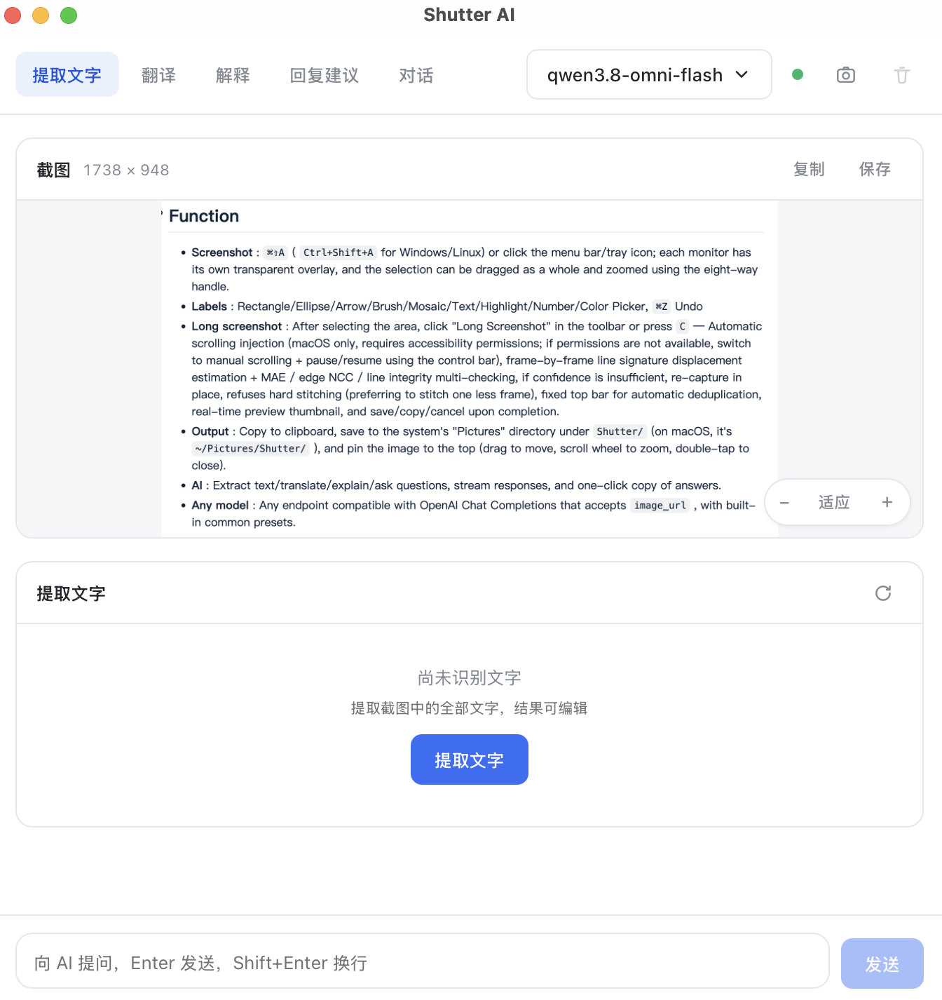

对标你熟悉的那款截图工具的操作手感，每一项都为键盘党和鼠标党留了快捷键。
悬停自动识别应用窗口，点击整窗截取；也可以随意拖拽框选任意区域。
自动滚动 + 智能拼接，聊天记录、长网页一图收下。拼不齐的帧宁可丢弃，绝不硬接。
截图钉在桌面上置顶显示，对照着写文档、抄信息，不用来回切窗口。
截图即取色：放大镜逐像素预览，HEX / RGB / HSL 一键复制。
矩形、箭头、画笔、马赛克、高亮、序号、文字——写完还能拖动、删除、再编辑。
每张截图自动存档，缩略图浏览、一键复制、重存或删除，历史不再丢。

接入任意 OpenAI 兼容接口（DeepSeek、通义千问、OpenAI、本地 Ollama…），模型随你选，数据你自己定。
当前版本 v0.1.1。也可以到 GitHub Releases 查看全部历史版本。
macOS 版为 ad-hoc 签名、未公证：首次打开请前往 系统设置 → 隐私与安全性 → 仍要打开。